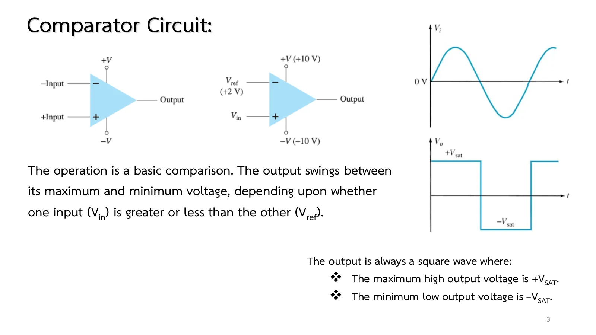
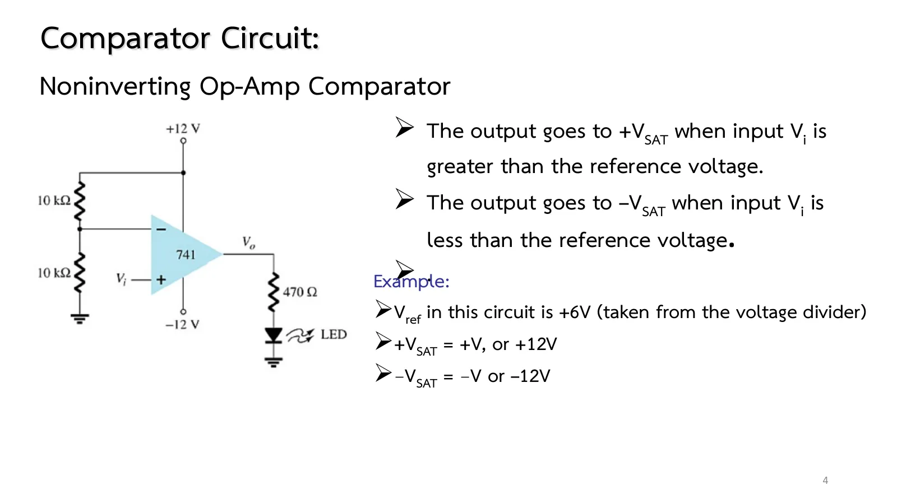
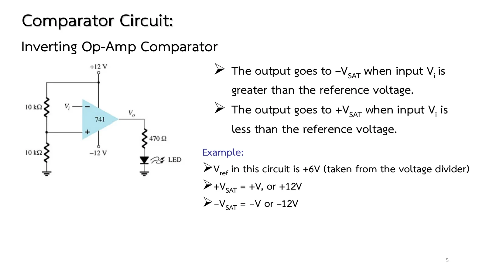
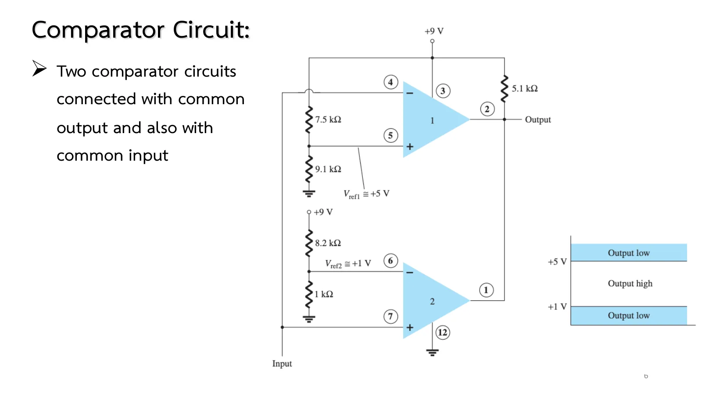
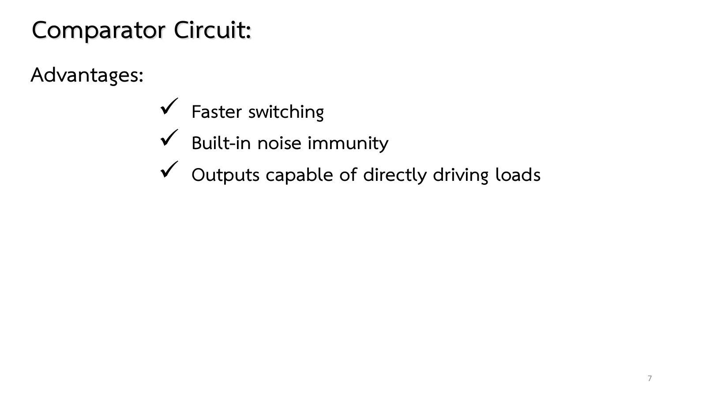

Chapter 8 slides pp. 3–7. The first linear-digital IC is the comparator: an op-amp without feedback, whose full gain of hundreds of thousands leaves the output only two values, \(+V_{sat}\) when the + input is above the − input and \(-V_{sat}\) when below. It compares an input signal with a reference \(V_{ref}\) and answers digitally, "above or not". This page has a comparator that can be driven by a sine (section A), both circuits of Fig. 13.3 driving an LED, the zero-crossing detector (Fig. 13.2) and the window detector built from two 339 comparators (Fig. 13.11).
The comparator (p. 3, Figs. 13.1–13.2): no feedback, the output swings fully either way. A sine input (linear) gives a square output (digital) that switches each time the input crosses \(V_{ref}\); a fraction of a millivolt is enough.
Noninverting / inverting (pp. 4–5, Fig. 13.3): \(V_{ref}\) = +6 V from a 10 kΩ/10 kΩ divider on +12 V. With \(V_i\) at the + input the output is +12 V for \(V_i\) > 6 V (LED on); swap the inputs and the LED lights for \(V_i\) < 6 V. Choose whichever the job needs.
Dedicated comparator ICs (p. 7): the 311 and 339 switch faster than a 741, have built-in noise immunity, and their outputs are open-collector transistors (they drive loads and can be wire-ANDed).
The window detector (p. 6, Fig. 13.11): two comparators with a common input and a common output through a pull-up; one pulls low when the input exceeds +5 V, the other when it drops below +1 V, so the output is high only inside the 1–5 V window.
The simulation: chapter 7's op-amp with single-supply rails (0 to +9 V) for the 339, and the open-collector transistor represented by an ideal diode with its cathode at the output.

สไลด์หน้า 3: ขาเข้าไซน์ ขาออกสี่เหลี่ยม (รูป 13.1–13.2)Slide p. 3: a sine in, a square wave out (Figs. 13.1–13.2)

สไลด์หน้า 4: วงจรเปรียบเทียบไม่กลับเฟส (รูป 13.3a)Slide p. 4: the noninverting comparator (Fig. 13.3a)

สไลด์หน้า 5: วงจรเปรียบเทียบกลับเฟส (รูป 13.3b)Slide p. 5: the inverting comparator (Fig. 13.3b)

สไลด์หน้า 6: ตัวตรวจจับหน้าต่าง (รูป 13.11)Slide p. 6: the window detector (Fig. 13.11)

สไลด์หน้า 7: ข้อดีของไอซีเปรียบเทียบSlide p. 7: the advantages of comparator ICs
Slide p. 6 (and the book's Fig. 13.11) only says "≅ +5 V" and "≅ +1 V"; the dividers actually give 4.93 V and 0.98 V, which the simulation uses. The slides pose no numerical problems on this topic; this page turns Figs. 13.2–13.3 and 13.11 and the book's PSpice runs (Programs 13.1–13.2) into problems. The simulated 741 switches instantly; a real one has a slew rate of 0.5 V/µs and is good only to a few kilohertz, one reason for dedicated comparator ICs (p. 7).
The input is a sine with adjustable amplitude and dc level; \(V_{ref}\) comes from a divider with an adjustable \(R_2\). Choose noninverting or inverting. The lower graph shows \(v_i\), the \(V_{ref}\) line and \(v_o\) in time (slowed 250×). The output stays high as long as \(v_i\) is above \(V_{ref}\): the higher \(V_{ref}\), the narrower the pulse. The LED blinks with the output (at 100 Hz a real eye sees a steady glow).
1
รูป 13.3a: วงจรเปรียบเทียบไม่กลับเฟสขับ LED
Fig. 13.3a: the noninverting comparator driving an LED
Slide p. 4 · Boylestad Fig. 13.3a, PSpice Program 13.1
โจทย์
ออปแอมป์ 741 แหล่งจ่าย ±12 V ตัวแบ่ง 10 kΩ/10 kΩ จาก +12 V ป้อนขั้ว − \(V_i\) ป้อนขั้ว + ขาออกผ่าน 470 Ω เข้า LED จงหา \(V_{ref}\) และ \(V_o\) เมื่อ \(V_i\) = 4 V และ 8 V และบอกว่า LED ติดเมื่อใด
Problem
A 741 on ±12 V, a 10 kΩ/10 kΩ divider from +12 V feeding the − input, \(V_i\) at the + input, the output through 470 Ω into an LED. Find \(V_{ref}\) and \(V_o\) for \(V_i\) = 4 V and 8 V, and say when the LED is on.
แถบเลื่อนใต้ภาพตั้ง \(V_i\) ลองตอบก่อน
The slider under the picture sets \(V_i\). Try it first.
2
รูป 13.3b: สลับขั้ว LED ติดเมื่อต่ำกว่า \(V_{ref}\)
Fig. 13.3b: inputs swapped, the LED lights below \(V_{ref}\)
สไลด์หน้า 5 · Boylestad รูป 13.3b
Slide p. 5 · Boylestad Fig. 13.3b
โจทย์
วงจรเดิมแต่ \(V_{ref}\) = 6 V เข้าขั้ว + และ \(V_i\) เข้าขั้ว − จงหา \(V_o\) เมื่อ \(V_i\) = 8 V และ 4 V
Problem
The same circuit with \(V_{ref}\) = 6 V at the + input and \(V_i\) at the − input. Find \(V_o\) for \(V_i\) = 8 V and 4 V.
A +9 V supply. Comparator 1 has \(V_{ref1}\) from 7.5 kΩ/9.1 kΩ at + and the input at −; comparator 2 has \(V_{ref2}\) from 8.2 kΩ/1 kΩ at − and the input at +. Both open-collector outputs are tied together through 5.1 kΩ to +9 V. Find \(V_{ref1}\), \(V_{ref2}\) and the input range for which the output is high.
A 5 V sine with no dc level and \(V_{ref}\) = 6 V: the input never reaches 6 V and the output stays at −12 V. Lower \(R_2\) until \(V_{ref}\) is below 5 V: pulses appear and widen, until at \(V_{ref}\) = 0 (R₂ → 0) they are exactly half a period.
Give the sine a +6 V dc level so that \(v_i\) swings about \(V_{ref}\): the output is a 50 % square wave. That is how a sine becomes a digital clock.
Switch to inverting: the output waveform turns upside down and the LED lights while the input is below \(V_{ref}\).
Try this 2 — problems 1–4
Problem 1: move \(V_i\) slowly through 6.00 V: the output jumps 24 V within 0.1 mV. Hover over the op-amp to see \(V_d\) and the very narrow "linear" region in the middle.
Problem 4: set the input to 0.9 V, then 1.1 V: comparator 2's diode stops conducting, the output rises to 9 V and the current in the pull-up vanishes. Set 5.1 V: comparator 1's diode conducts instead.
Problem 4: in a real circuit the 339's "low" output is a saturated transistor at about 0.2 V; the simulation's ideal diode gives exactly 0 V.
Chapter 8 slides pp. 3–7 · Boylestad & Nashelsky, 11th ed., §13.2 (Figs. 13.1–13.11) and Programs 13.1–13.2